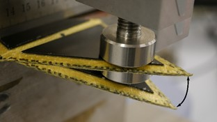
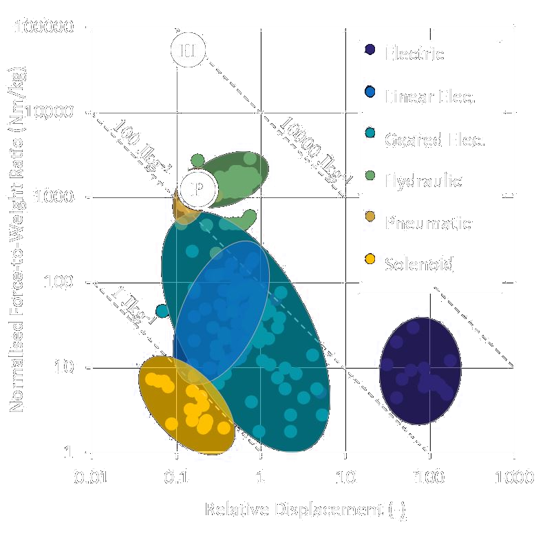

Compatible with high-pressure systems operating at 5000 psi (~34 MPa). Suitable for most standard hydraulic oils,
as well as kerosene based fueldraulic and Skydrol phosphate ester based systems. Standard operating temperature range of
-10°C to 100°C.

Seeking to finish product testing and achieve AS9100 certification in 2020. Do contact us if you have specific
operating requirements in regards to chemical compatibility or temperature to see if we can tailor a solution for you contact@actuationlab.com.
We are currently seeking partners to work with us in developing electrohydraulic servo-valve and electrohydrostatic technology
to complement the unique features of our actuator. If you would like to be involved please email contact@actuationlab.com.

Here we show the normalised force and displacement performance of our Printed (P) and Hydraulic (H)
actuators on a Ashby Chart. The further an actuator is towards the top right of the chart, the greater
it work output potential for a given weight of device. Further information on interpreting this chart
can be found from Cambridge University and the
RSP.